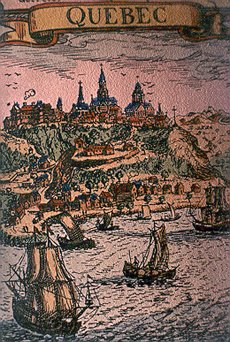
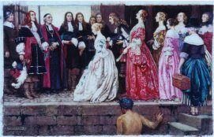

|
|
|
|
|
Between 1663 and 1673, nearly 850 women left France to settle in America. They hoped in this way to escape miserable living conditions. The ladies in charge of recruiting them, moreover, told them that beyond the ocean lay a new country, big and beautiful, where every woman could have her husband, her house and her plot of land. How could they not be tempted? How could they turn their backs on a future that seemed so easy? Many girls were won over by the adventure and chose to set sail for the New World.
THE ORIGIN OF THE FILLES DU ROI It was Marguerite Bourgeois, who welcomed part of the yearly contingent at the Maison St-Gabriel in Montreal, who first called them "filles du roi" (King's Daughters), because a little more than half of them were orphans and the king paid for their passage and their dowry. Most were between 18 and 25 and of humble background, but a few came from the nobility or the bourgeoisie; they were called "demoiselle" and their dowry was larger. More than half of them had been residents of La Salpetrière before emigrating, a kind of branch of the Hôpital Général of Paris that housed destitute women and girls. In 1661, Sylvio Dumas writes, "this refuge sheltered 1,460 people; it took in orphan girls*, but also daughters of poor or hard-up minor nobles, who received special treatment and were called the 'jewels'. The girls were taught to read, knit, embroider, make linens and lace; they were given a solid religious education." But they were also put to work. * a widow who did not remarry quickly was so destitute that she had to abandon her children.
At that time France was going through a troubled period The wars of religion (remember the siege of La Rochelle in Mathieu Choret's childhood) were over, but 1656-1663 was a time of economic hardship; wheat was scarce, and people were dying of hunger and cold. Socially, there was a wish to isolate the poorest, beggars, orphans, the elderly... begging had become a real scourge in the capital, and revolts were feared more than anything since the Fronde (a parliamentary and then popular uprising from 1648 to 1652, during the minority of Louis XIV and the government of Mazarin). To protect Parisian society from all these people wandering the streets, it was decided to shut them up in the Hôpitaux généraux (General Hospitals) founded at the time, La Salpetrière and La Pitié. They were put to work, in the hope of preventing revolt. The destitute women kept up the Hospital and looked after the sick, the poor and the disabled, all under the authority of nuns who did not let them go out. It was very hard for little girls doing heavy work and held as prisoners. No future for them, no match to meet. At 25 they were put out on the street, and often they had only prostitution to survive. When the king offered them Canada, many saw it as their only chance of a future. Ladies were given the job of recruiting girls healthy and strong enough to endure the Atlantic crossing and live by subsistence farming in a country with a harsh climate.
LOUIS XIV AND THE FILLES DU ROI In 1663 King Louis XIV decided to take the little North American colony in hand. He found that it counted barely 3,035 people, while the English colonies had around 75,000 inhabitants. 17th-century France was the most populous country in Europe, but people there believed that the more populous a country, the more powerful it was, since it was easier to raise an army. France did not want to lose population; that would remain its great fear until the 18th century. So the king wanted to encourage the local population to multiply as quickly as possible, but on its own. But how could that be done when the country had one marriageable woman for every six men? The only solution was to encourage a large number of women to go and settle in New France. So efforts were made to recruit girls in good physical health, fairly sturdy, not too unattractive and above all of childbearing age. They were given a dowry of 50 livres and promised a husband and a house, which was no small thing for girls for whom exile was a way to escape poverty. Then they were put aboard a ship bound for the New World.  From the very first weeks, the Ursulines arranged meetings between the bachelor settlers and the Filles du Roi. If a man was attracted to a young woman, he asked permission to court her and met her under the eye of a chaperone. Courtship often came down to a few walks in the town of Quebec. Before proposing, it was considered proper to offer one's beloved little gifts such as a hair comb or a shawl. Generally, the men of the colony preferred women in their twenties, strong and well built, able to work the land. The Filles du roi, for their part, looked for a good match, that is, a man who already had a little money, land and a house already built. Love came second; what mattered was that their personalities got along, and they hoped the rest would follow. Since the king's instruction was to keep courtship as short as possible, couples married on average four to five months after they first met. It is hardly surprising, then, that many girls regretted their choice and backed out at the last minute. Young men who went back on their promise had to pay their intended a certain sum in compensation. These many marriages led to a certain mixing of social groups and allowed a small number of women of modest condition to rise socially. In nearly one union in five, the age gap was more than 10 years. Most marriages took place in the autumn, at the end of the harvest. The ceremony was usually held on a Monday or Tuesday, and the celebration went on for two or three days. At that time it was out of the question to marry on a Friday or Saturday, since those were fast days. Once the celebration was over, the women went to live on their husbands' land. They helped clear it, felling trees and pulling up stumps, and sometimes helped build the house. Usually they were pregnant within a month or two, which did not stop them from going on lifting stones and turning the soil. They had no respite, working from morning till night. Marie de l'Incarnation, superior of the Ursulines of Quebec, wrote on October 29, 1665, that even once married, these girls had a hard lot: " When a family starts a farm, it takes two or three years before it has enough to eat, not to mention clothing, furniture and an infinity of little things needed to keep a house; but once these first difficulties are over, they begin to be comfortable, and if they behave well, in time they become as rich as one can be in a new country like this one."
THE LEGACY OF THE FILLES DU ROI  From 1670 on the population grew so much that around 1678-1680 the number of people born here overtook the number of immigrants. What is more, the balance between men and women was restored. The Filles du roi were very fertile, with 9 children on average, while in France the average was 8. The population went from 3,000 in 1663 to 15,000 in 1700. It must be said that natural selection played a part. The orphans from the Hôpitaux généraux, veritable breeding grounds for epidemics, had already passed a natural selection by surviving there. Another selection took place during the crossing. Most of the Filles du roi lived longer than the women of France of the same period, and above all more freely.
Marriage
contracts in New France Generally, unions were concluded quite quickly in New France. In the 17th century, a few months of courtship were enough for a man to ask for the young woman's hand. If she accepted, the betrothal was arranged at the Church and the banns were published. To speed up their marriage, half of the Filles du roi obtained a dispensation from the publication of one bann out of three. As for betrothals, even though in 1698 the Bishop of Quebec banned them for fear they would encourage couples to live together before marriage, most of the Filles du roi, who came between 1663 and 1673, were betrothed. Though some Filles du roi skipped certain steps before marriage, few avoided the contract. It is estimated that about 80% of couples signed one. Before the notaire (notary), in the presence of friends, relatives and notables of the colony, the future spouses committed to community of property. Normally, the young woman contributed a dowry, larger or smaller depending on her social rank. We know, for example, that the Filles du roi received an amount ranging from 50 livres for those of modest condition to 100 livres for the demoiselles. Anyone who could read and write could become a notaire. He was appointed by the king to practise in a royal jurisdiction or by the seigneur to practise in a seigneury. So it was not necessary to have studied for years to do this job. It was mostly soldiers or craftsmen who became notaires. Some of them even became very important in the colony and left considerable archives. The visit to the notaire did not, however, seal the union. The young woman was free to break the marriage contract whenever she pleased to marry another suitor, which happened in 11% of cases. Until her wedding day, then, the woman had the upper hand, and all she had to do was choose a good match. Weddings often took place in the autumn, after the harvest, since they could not be celebrated during Advent or Lent, nor in summer when the men were working in the fields. The wedding took place early in the week, on Monday or Tuesday, in the bride's parish; after the religious ceremony, everyone went in procession to the reception. On this occasion, relatives and friends gathered to celebrate. Sometimes even Governor Frontenac or Intendant Talon attended. It must be said that marriage was a very important event, since it ensured the survival of the colony. Once married, a woman was under her husband's guardianship and could make no legal decision without his consent. She was not even entitled to accept a gift, much less to sue her husband for adultery or anything else. A wife was considered a minor except when her husband authorized her by a legal deed to manage his property. This happened quite often, since men had to travel west for the fur trade or go to France to settle their affairs. The wife then acquired all the rights and became head of the family.
|